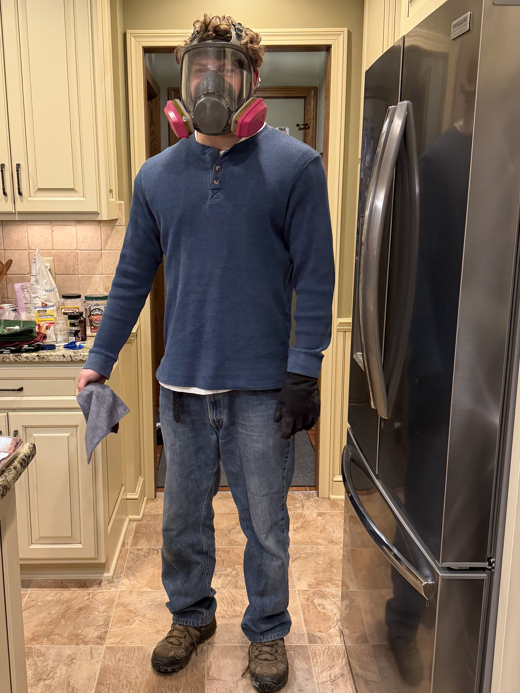

Repair Process and What I Learned
On this page I wanted to explain more about the actual repair process and what I learned from doing it myself. Once I decided to try repairing it on my own, I realized that the process involved much more than just painting over the damaged area. One of the first important steps was preparing the surface correctly. That meant cleaning the area and sanding it so the new materials would stick better. I also had to carefully tape off the section I wanted to work on so that primer and paint would not spread onto parts of the car that were still in good condition. This preparation stage seemed simple at first, but it made a big difference in keeping the work neat. After sanding and masking, I moved to primer. Primer helps create a more even surface and gives the paint something better to bond to. I learned that patience matters a lot during this stage because rushing leads to rough spots or uneven results. I also learned that safety is important, especially when working with fumes, so wearing a mask and being careful with the work area was part of the process too. Overall, this project taught me that car repair takes time, planning, and attention to detail. Even though I am not a professional, doing this myself helped me understand the steps body shops go through and gave me practical experience that I would not have gotten otherwise.
Main Steps in the Process
- Look at the damage and decide what area needs repair
- Clean the surface
- Sand the damaged section
- Tape off the area carefully
- Apply bondo and sand again
- Apply primer
- Prepare for paint and finishing
Images from the Process



Contact
Email: smilack.e@northeastern.edu
GitHub: github.com/esmilack